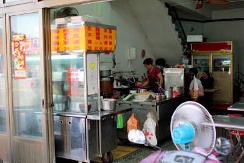

是說，有一天要去參加Jamie的同學會而來到了桃園，
對於桃園不是很熟的我們，想說來吃一點不一樣的東西，
於是就上網搜尋了桃園火車站附近的美食，
而這間「張鶯歌麵線羹」就這樣被google了出來，
我們也就依據地址，邊走邊問路而找到了這間店。
首先來看一下店面的相關照片。

店門口
店的招牌，旁邊還放了個跑馬燈，如此就顯眼多了

從外面拍一下裡面的樣子，店不大，約可容納16個人左右
菜單，給大家參考
店內一景
店內還有炒米粉
今日要吃的主角，麵線U 7FAE
配料，看起來不只大腸，旁邊白白的是花枝，很特殊喔
接下來就來一一介紹我們當天所點的餐點囉。
麵線羹
外面看起來，似乎是個很普通的麵線羹(大碗55元)
湯匙一挖，發現了好料
咬下去原來是排骨酥，真的很特殊
再一挖，有大腸、豆皮及花枝
吃到快到底了，仍有一堆大腸
這間的麵線羹真的很特殊，外表看起來與一般的沒什麼不同，
但裡面可是藏了不少好料啊。除了基本的大腸之外，
還有豆皮與切成與大腸差不多大小的花枝及香氣及口感兼具的排骨酥，
整體吃起來沒有違和感，非常的搭且好吃，這可是我們在這之前沒有吃過的口味。
雞肉飯
雞肉飯(大碗40元)上面還有魯肉
夾一些雞肉起來
這邊的雞肉飯吃起來也算不錯，不過跟台北的梁記嘉義雞肉飯比起來，我還是愛吃梁記的。
甜不辣
甜不辣(50元)上面是滿滿的醬汁
醬汁下面也是有許多好料
吃完可以加湯來喝一下，湯底似乎是加了柴魚，不錯喝
這款甜不辣的醬汁是偏甜的，食材的部份也煮得洽到好處，
不過如果把甜不辣與雞肉飯跟麵線羹比起來，就遜色了一些，
來這邊還是要吃麵線羹才是啊。而且他們家東西的份量很充足，
三樣東西吃下來，兩個人才吃了145元，
肚子卻是飽到不行，實在是很超值。
大家如果哪一天來到桃園火車站附近，
又不想花大錢吃東西的話，
可以考慮來這間鶯歌(張)麵線羹來吃吃看喔，
可以吃到與一般麵線羹不同的口感，推薦給大家 。
店家資訊提供如下：
地址：桃園縣桃園市民生路7號
電話：(03)337-8928
營業時間：11:30-20:00(週日公休)
價 位：★★★★
美味度：★★★★
舒適度：★★★★
服 務：★★★★
引用文章:愛評網